NÉVORA
galeria de arte conceitual interna — estilo "desenhado à mão e digitalizado" (ADR-010)
placeholders do time; a arte final será redesenhada por artista
As 6 Classes de Acendedor
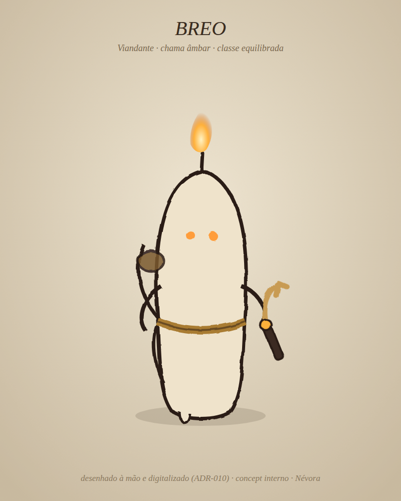
Breo — Viandante · âmbar · equilibrado
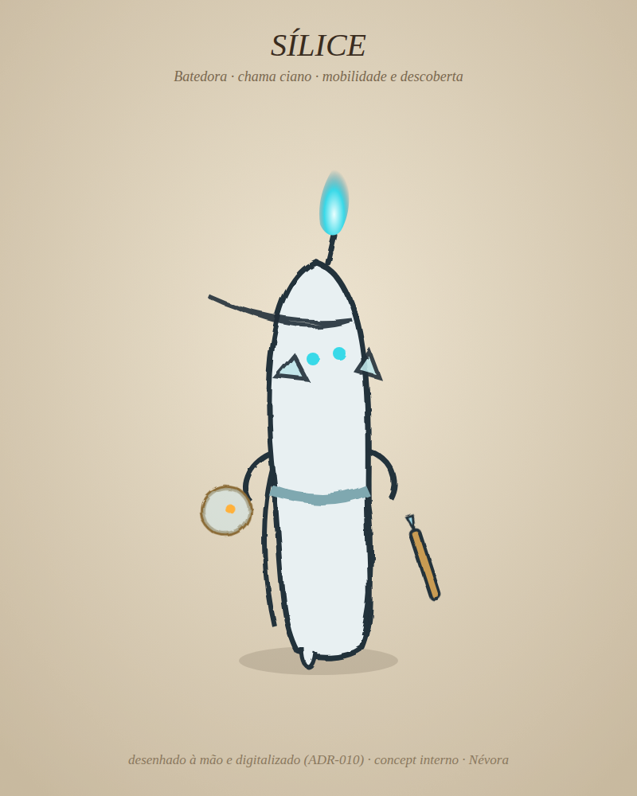
Sílice — Batedora · ciano · mobilidade
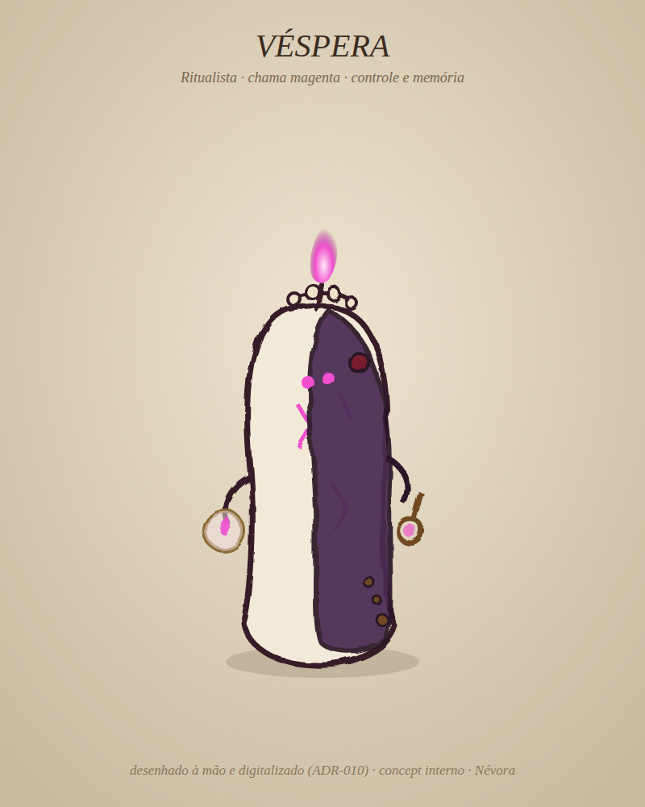
Véspera — Ritualista · magenta · controle
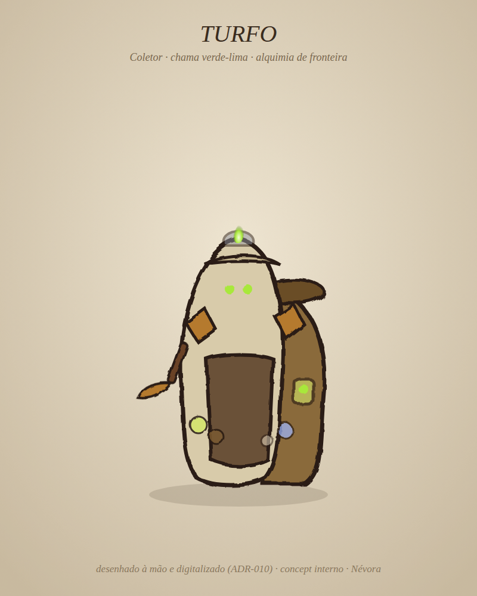
Turfo — Coletor · verde-lima · alquimia
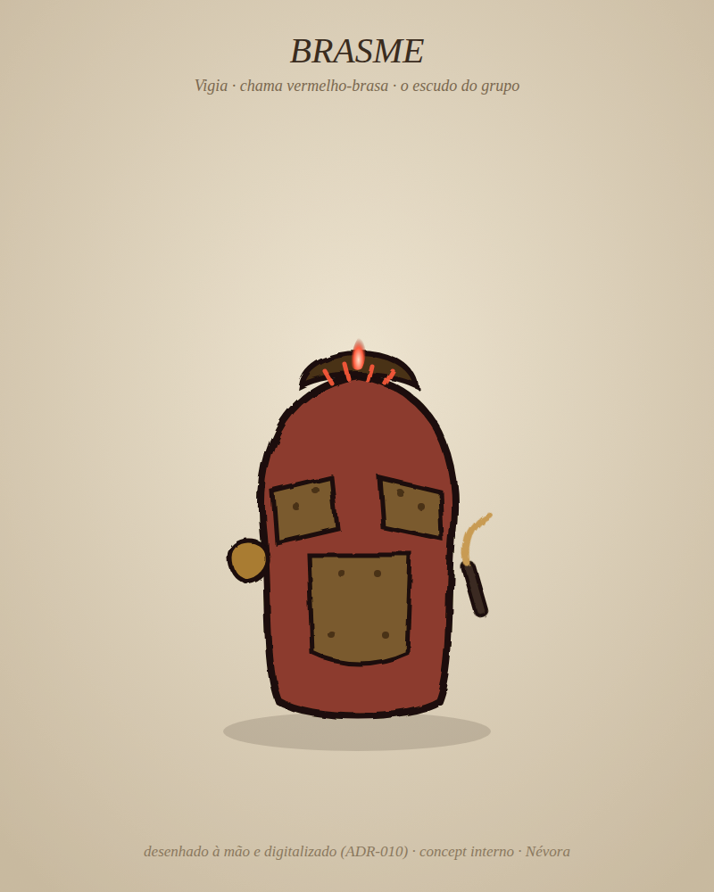
Brasme — Vigia · vermelho-brasa · defesa
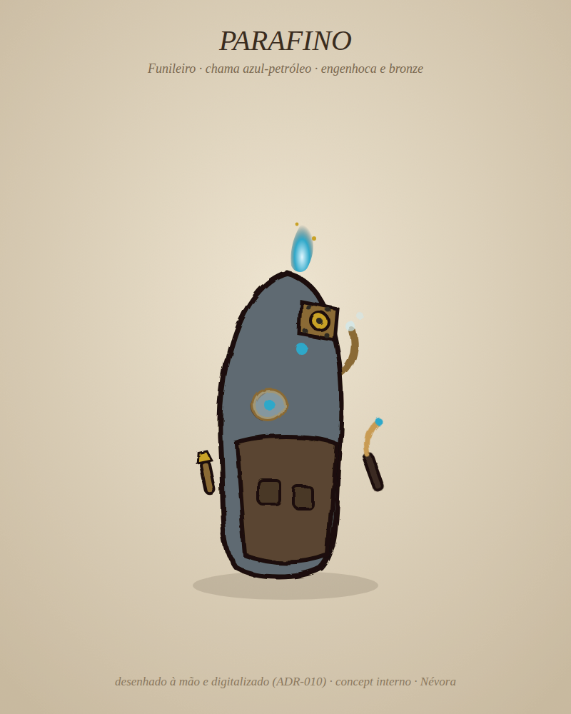
Parafino — Funileiro · azul-petróleo · engenhoca
Mundo e UI
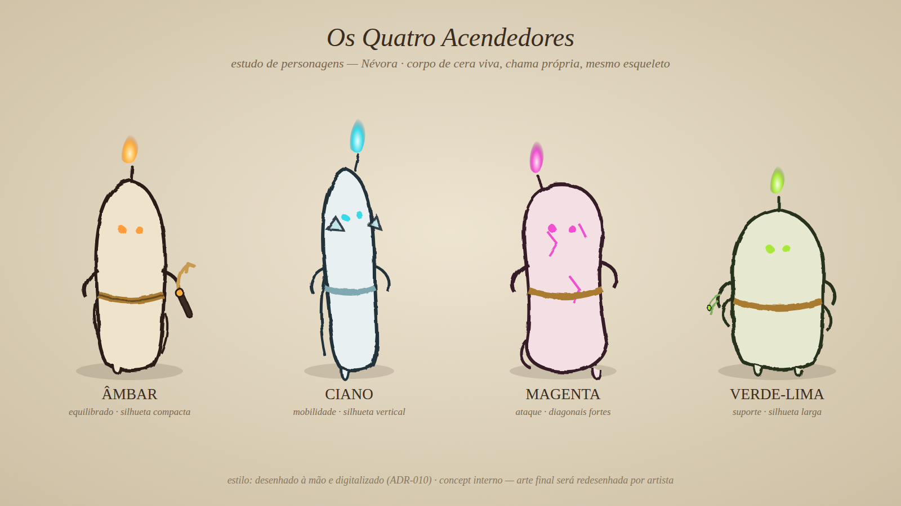
Line-up original — Âmbar, Ciano, Magenta e Verde-lima (estudo inicial)
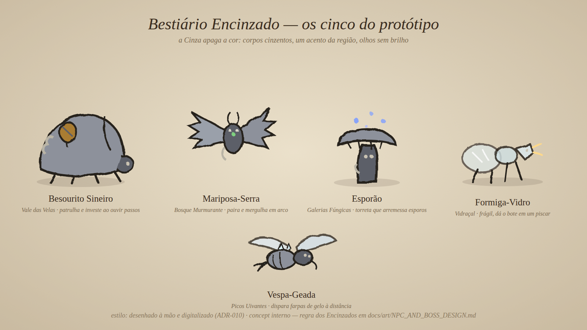
Bestiário Encinzado — os 5 inimigos do protótipo, um por região
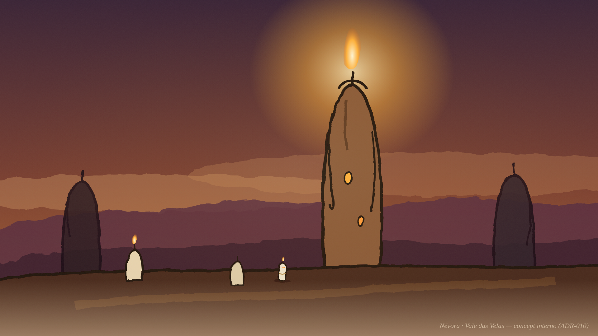
Vale das Velas — o farol de cera e a trilha das velas
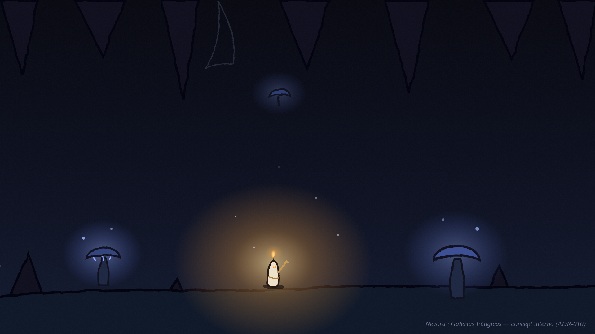
Galerias Fúngicas — a luz do Acendedor contra a escuridão
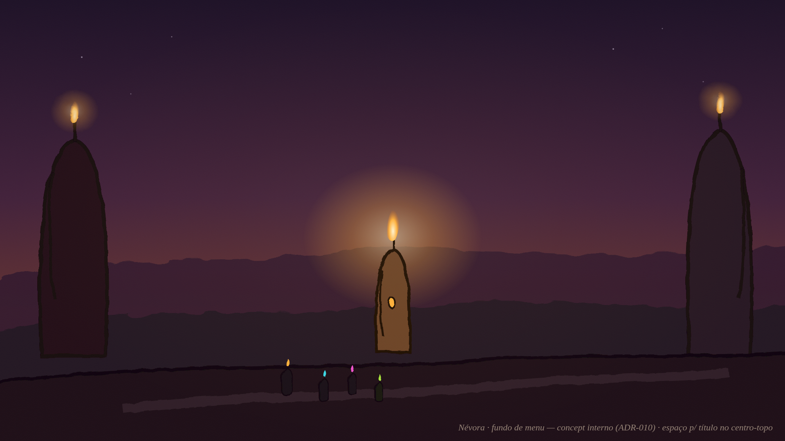
Fundo do menu principal — os quatro subindo a trilha (espaço p/ título no topo)
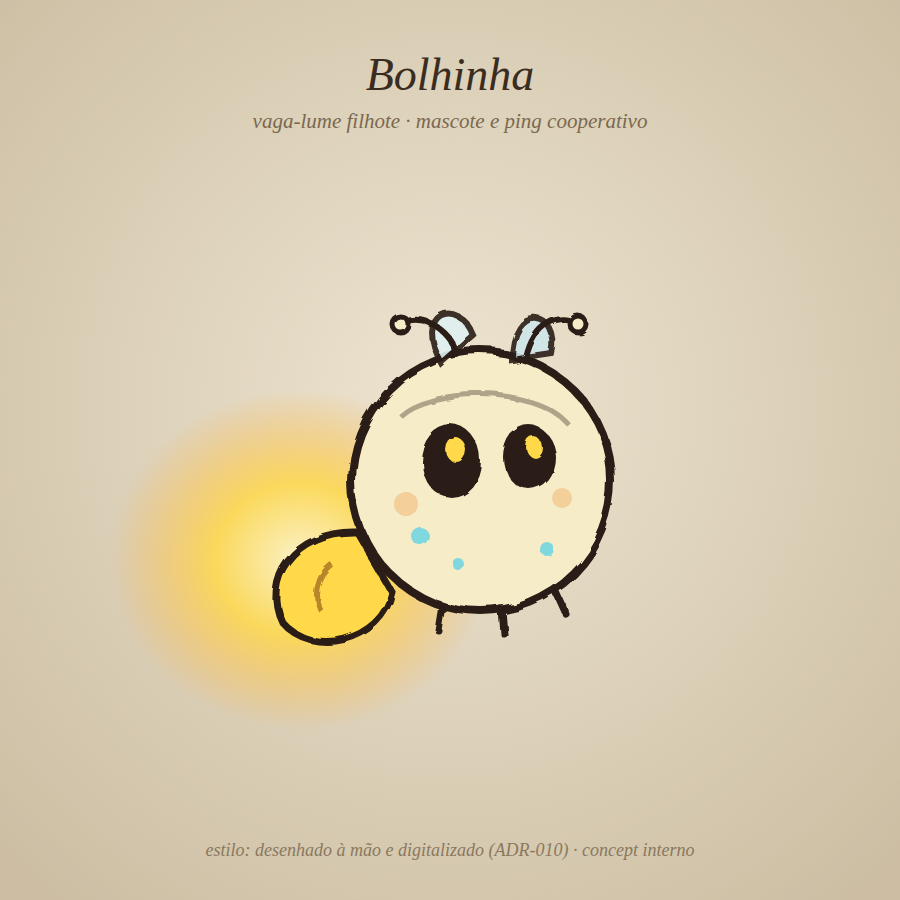
Bolhinha — o vaga-lume mascote / ping cooperativo
← jogar o protótipo